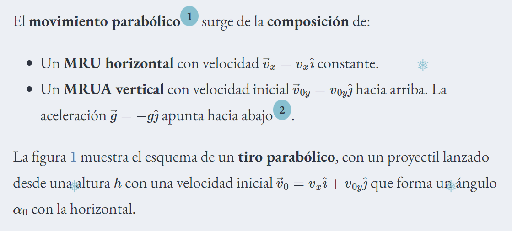
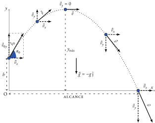
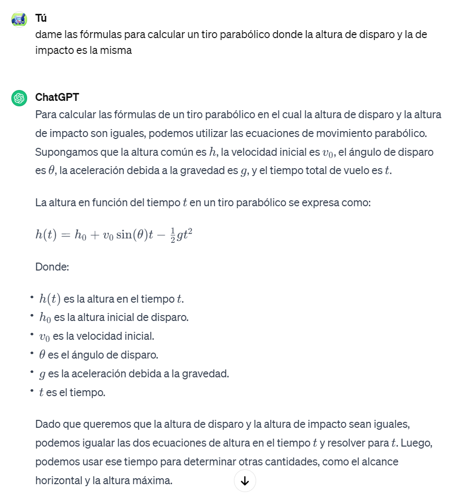

Página tiro parabólico
Como calcular el tiro parabólico
Como calcular la velocidad y el ángulo para dar a Barrasus a 2 metros de distancia
La parábola del tiro que vayamos a calcular va a depender de 2 cosas: la velocidad (v) y el ángulo (α)
Condicionadores para el cálculo
-
La cabeza de impacto estará a 2 metros del lanzamiento (horizontalmente)
y a la misma altura que el punto del lanzamiento (h = 0)
-
Para calcular el tiro óptimo será aquel que con menos velocidad de salida que impacte en la cabeza
-
No se tiene en cuenta el rozamiento del aire ni ningún otro factor externo
Forma de cálculo
La relación del tiempo que tarda horizontalmente en desplazarse 2 metros es el mismo que tarda la pelota en subir y bajar


Para aclarar dudas he preguntado a Chat-GPT

Para calcular t
Del movimiento horizontal tenemos: L = V0*cos(α)*t
Dado que L = 2m entonces t = 2 / (V0*cos(α))
h0 y h(t) son ambas = 0
Entonces la formula quedaría:
0 = 0 + V0*sin(α)*t - 0.5*g*t2
0 = V0*sin(α) - 0.5*g*t
Sustituimos t en la formula y despejamos V0
0 = V0*sin(α) - 0.5*g*2 / (V0*cos(α))